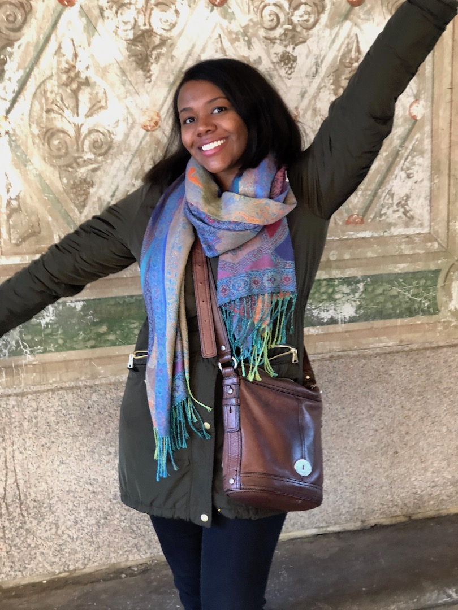

About Me
Mikala Smith is a budding full stack web developer, currently attending UNCC's coding bootcamp program. She originally hails from Charlotte, NC, and considers Chapel Hill, NC to be her second home. She attended UNC-Chapel Hill and graduated with a Bacherlor of Arts in Global Studies.
She now works as an English Teaching Assistant at an elementary school. She likes to think of herself as doing her best to help craft the young minds of the next generation, or as her students would put it, "The lady who just won't let up on grammar."
Just last year, she lived in the quaint, and beautiful town of Albacete, Spain, where she also worked as an English Teaching Assistant, and did not let up on grammar with her students there either. In her free time, she likes to travel whenever she can, and when she cannot, she likes to get lost in a good book, a good netflix series, or go on what she calls a "leisurely run", but what others may refer to as "walking." As technology continues to increase its prevalency in the classroom, she hopes to bridge her passion or teaching English with her new passion for coding to make a difference in the education system.
Connect With Me